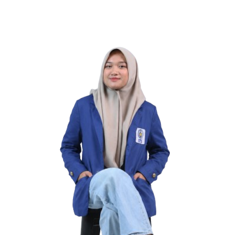
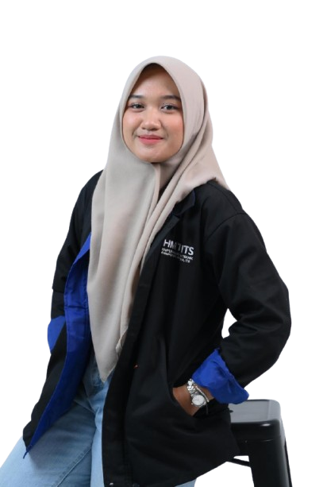
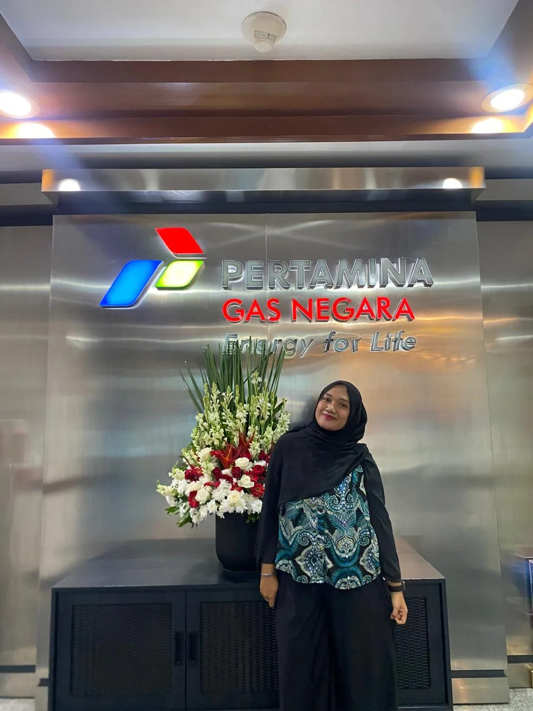
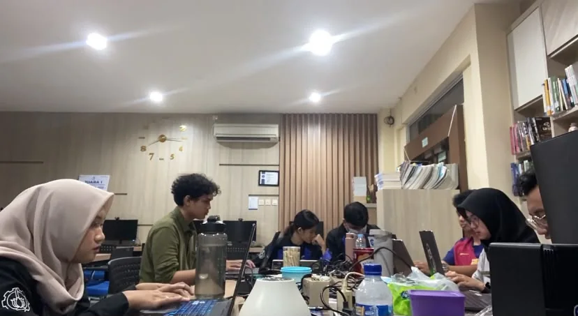
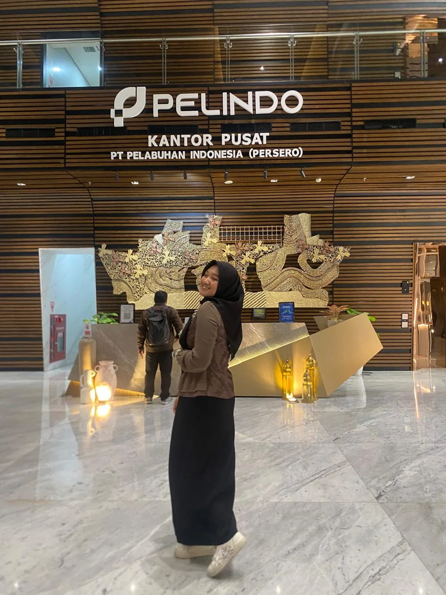
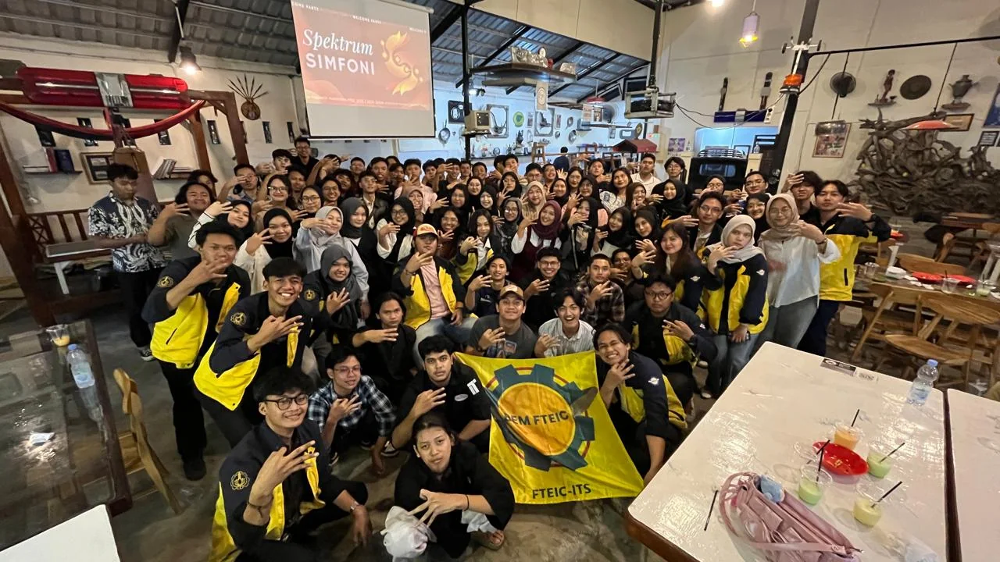
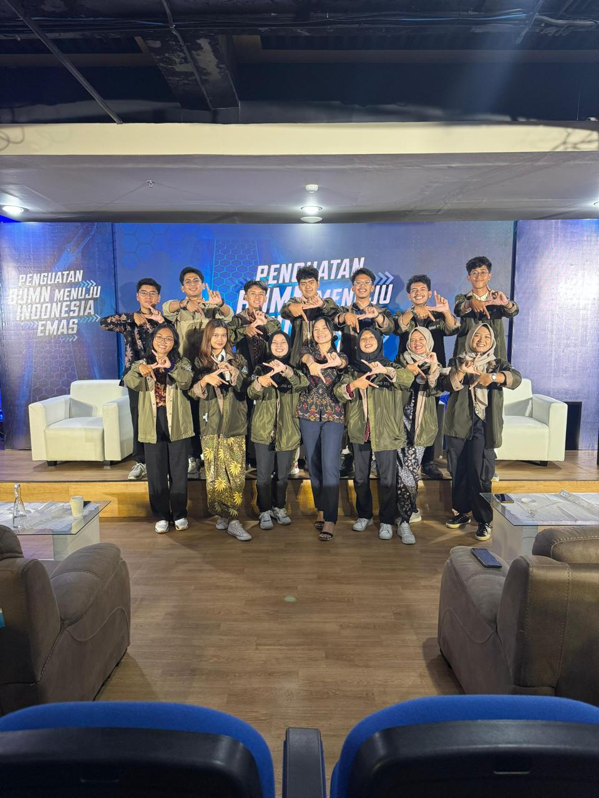

Software Engineering · ITSSurabaya, Indonesia
A Software Engineering student at Institut Teknologi Sepuluh Nopember (ITS) with hands-on experience in software quality assurance, testing, documentation, UI/UX, and software projects.
Open to international internship & research opportunities.

My academic background and practical experiences sit at the intersection of software engineering, quality assurance, and human-centered technology.

I am pursuing a Bachelor's degree in Software Engineering at Institut Teknologi Sepuluh Nopember (ITS). My relevant coursework includes Software Engineering, Database Systems, Software Testing, and Web Development.
My interests are software engineering research, software quality, human-centered technology, and emerging digital technologies. I enjoy work that combines technical problem solving with systematic analysis.
Foundation across software development, databases, testing, and web technologies.
Bachelor's degree · Surabaya, Indonesia
Professional, teaching, and organizational experiences that shaped my approach to quality, communication, and collaboration.





Selected work across QA, software engineering, UI/UX, backend development, system analysis, and technology-for-community work.
Tested a web-based logistics platform by creating test cases, reporting bugs, documenting evidence, and performing regression testing using Qase.
Performed black-box testing for the Qobiltu.id platform by creating test scenarios, identifying and reporting bugs, documenting testing evidence, and tracking issues using Trello.
Analyzed and documented software governance requirements, including roles, responsibilities, characteristics, and operational guidelines.
Designed the website interface and user flow in Figma, including wireframes and design guidelines to support a consistent user experience.
Designed the interface in Figma and developed responsive front-end pages for an intuitive and user-friendly mobile application experience.
Developed a responsive front-end interface for a web-based boarding house management system, focusing on clear interactions and usability.
Contributed to system analysis, business requirements, API and functional testing, and QA documentation for an energy monitoring platform integrated with Gen AI.
Developed a FastAPI microservice for cycle, mood, symptom, dashboard, and prediction features using RESTful APIs and SQLite.
Participated in a university-led community service program by delivering software training and assisting participants in applying digital tools.
A practical toolkit shaped by academic projects, QA internships, UI/UX work, and software development.
Prompt engineering and Generative AI are part of my current technology skill set and project interests.
Software engineering research, software quality, human-centered technology, and emerging digital technologies.
For international internship opportunities, research collaborations, software engineering projects, QA/testing work, or collaborative technology projects.
For international internship opportunities, research collaborations, software engineering projects, QA/testing work, or collaborative technology projects.